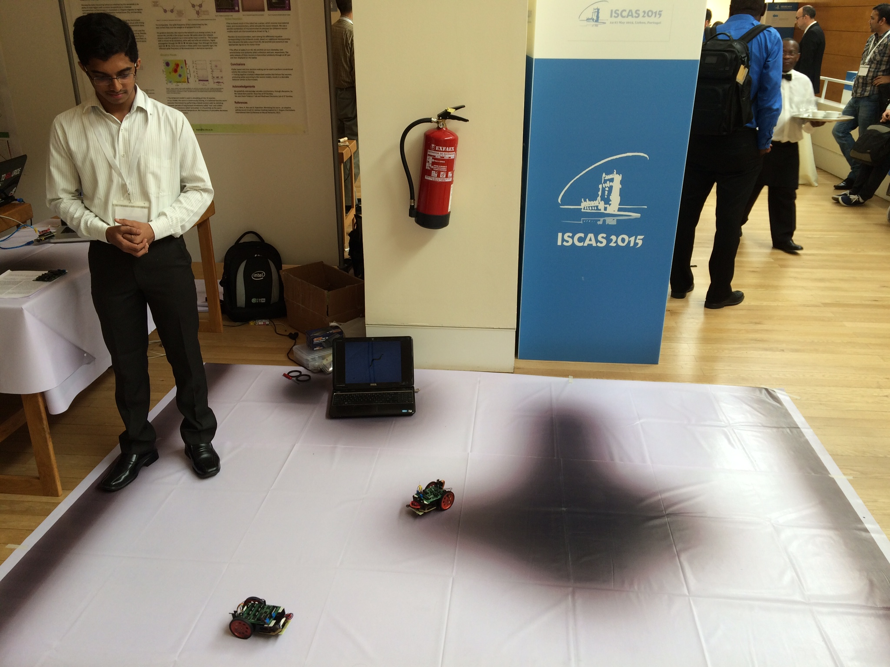
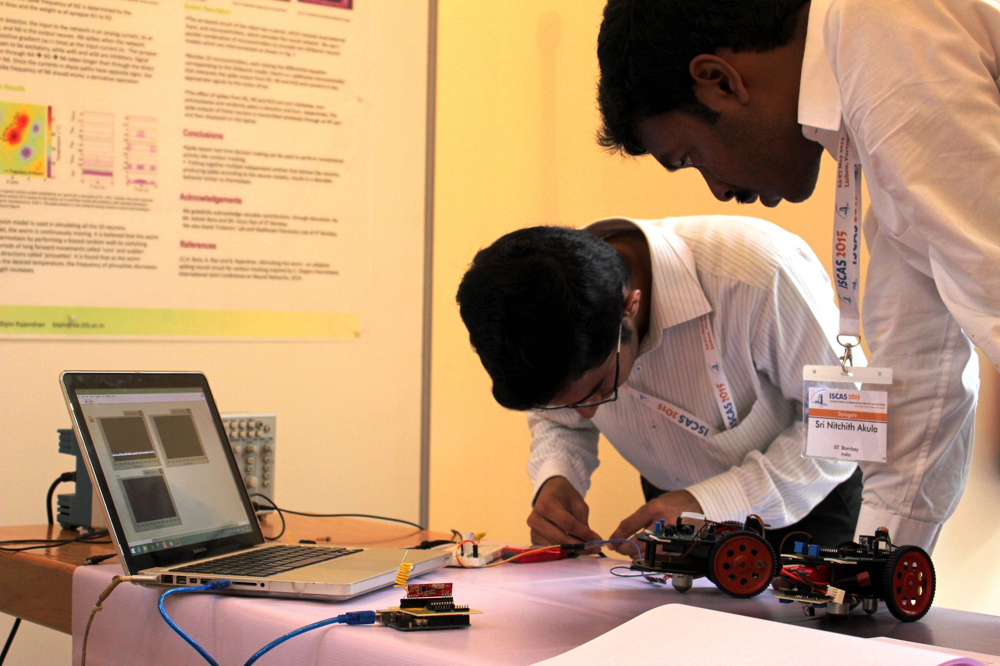

C. Elegans is a nematode with the distinction of being the first and only organism to have its complete connectome. It is widely studied because it has a small neural system of just 302 neurons but exhibits interesting behaviors like thermotaxis and chemotaxis. C. Elegans thus is a model organism to begin learning how neurons conspire together to do the magic we see them do.
Consider the thermotaxis behaviour of C. Elegans . The nematode shows an affinity for the temperature at which it is cultivated since it associates it with food. Hence when left in a region which temperature gradation, it sense and tracks the region with temperature closes to the temperature at which it was born. Now its hard to create a well defined temperature gradient paths, but one can imagine C.elegans to be nature's implementation of a line-follower bot, replacing the IR leds usually used with temperature sensors. It sounded exciting to me. So my friend Sri Nitchith and I under the guidance of Prof. Bipin Rajendran and with help from Nandakumar decided to build a bot emulating the worm. Previously an architecture inspired by C. Elegans for the purpose was studied in the group and published. Though neurons in C. Elegans do not use action potentials to interact, we built a spiking neural network with underlying architecture borrowed from C. Elegans .
Here is the proposal we submitted to IEEE International Symposium on Circuits and Systems (ISCAS) 2015. Our final bot turned out to be very different and much more interesting than what we had planned and proposed. We had 10 tiny microcontrollers independently and asynchronously acting as neurons. We could also wirelessly display their spikes. The video above shows our bot in action. The first version we built can be seen here
Some photos and the poster of our demonstration
 Find below our poster